Elyra Pipelines
Elyra provides a visual pipeline editor for building pipelines from Python and R scripts as well as Jupyter notebooks, simplifying the conversion of multiple files into batch jobs or workflows. A Pipeline in Elyra consists of Nodes that are connected with each other to define execution dependencies.
Elyra’s visual pipeline editor lets you assemble pipelines by dragging and dropping supported files onto the canvas and defining their dependencies. After you’ve assembled the pipeline and are ready to run it, the editor takes care of generating the Tekton YAML definition on the fly and submitting it to the Data Science Pipelines backend.
Creating a Data Science Pipeline with Elyra
In order to create Elyra pipelines with the visual pipeline editor:
-
Launch JupyterLab with the Elyra extension installed.
-
Create a new pipeline by clicking on the Elyra
Pipeline Editoricon. -
Add each node to the pipeline by dragging and dropping notebooks or scripts from the file browser onto the pipeline editor canvas.
-
Connect the nodes to define the flow of execution.
-
Configure each node by right-clicking on it, clicking 'Open Properties', and setting the appropriate runtime image and file dependencies.
-
You can also inject environment variables, secrets, and define output files.
-
Once the pipeline is complete, you can submit it to the Data Science Pipelines engine.
Elyra runtime configuration
A runtime configuration provides Elyra access to the Data Science Pipelines backend for scalable pipeline execution. You can manage runtime configurations using the JupyterLab UI or the Elyra CLI. The runtime configuration is included and is pre-configured for submitting pipelines to Data Science Pipelines. Refer to the Elyra documentation for more information about Elyra and the available runtime configuration options.
Exercise: Offline scoring for fraud detection
Setup
For this exercise we will be utilizing the DataSciencePipelineApplication created in the previous section. In addition to that pipeline instance, we will need to import a custom workbench image, and create an additional bucket in S3 to store some items we will need to train the model.
Import the custom workbench image
To begin, we will add a new image that has all of the packages we need for our workload.
-
In the OpenShift AI Dashboard, under
SettingsselectNotebook images. -
Select
Import new imageand enter the following details:-
Image location:
quay.io/mmurakam/workbenches:fraud-detection-v1.0.1 -
Name:
Fraud detection workbench -
Optionally a description.
 Figure 1. Import a custom notebook image
Figure 1. Import a custom notebook image -
-
Click
Importto import the notebook image.
|
The process of managing model images requires admin access to OpenShift AI. An admin user would normally be responsible for creating and managing custom images for data scientists to utilize. |
Prepare the bucket
Next we will create an additional bucket to host several files we will access for model training.
-
Log into the Minio web console.
-
Click
Administrator > Bucketsin the left navigation sidebar, and then clickCreate Bucketin theBucketspage to create a new bucket namedfraud-detection. -
Download the following two files from the model artifact repository:
-
Click
User > Object Browserin the Minio web console sidebar. Upload the two files to thefraud-detectionbucket.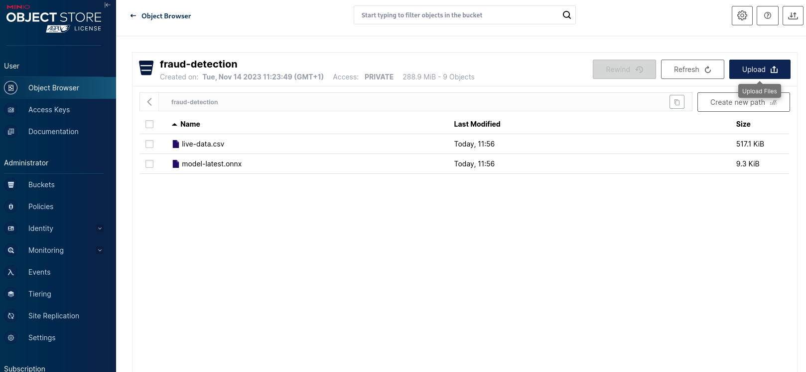 -
In the
pipelines-exampledata science project within the OpenShift AI Dashboard, create a new data connection with the following details:-
Name:
fraud-detection -
Access key:
minio -
Secret key:
minio123 -
Bucket:
fraud-detection
-
-
Click
Add data connectionto create the data connection.
Set up the workbench
Now we will start a workbench.
-
In the OpenShift AI dashboard for the
pipelines-exampleproject, create a new workbench and enter the following details:-
Name:
fraud-detection-workbench -
Image selection: Select
Fraud detection workbenchfrom the drop-down -
Container size:
Small -
Persistent storage size: Create a new persistent storage with name
fraud-detectionand size 5 GB -
Select
Use existing data connectionin theData Connectionssection, and select thefraud-detectiondata connection
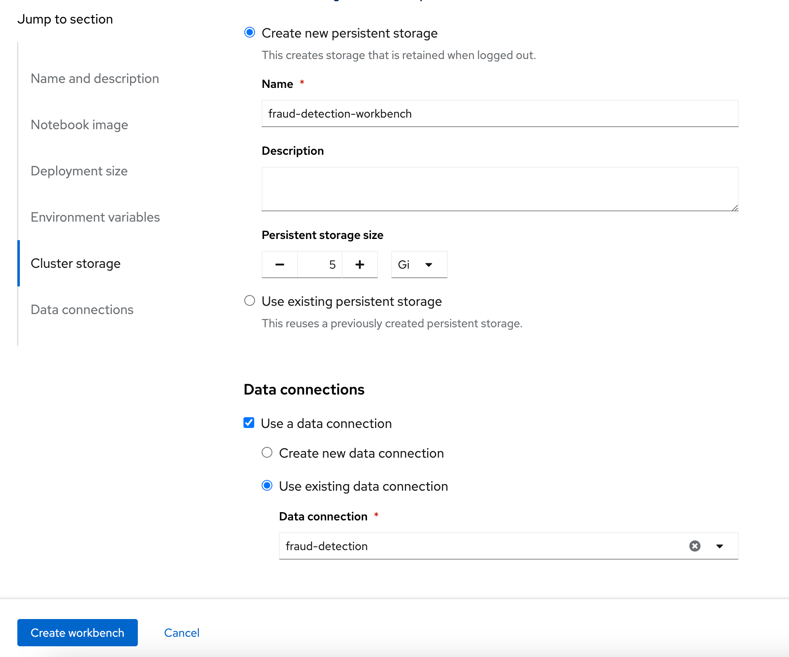Figure 2. Create a new workbench -
-
Click
Create workbench. The workbench creation may take several minutes the first time it is started.
|
Many things can prevent a Workbench image from starting, including issues pulling images, mounting volumes, or being unable to schedule the pods due to lack of resources or |
Set up pipeline storage
While the workbench is starting, we will create a persistent volume that the pipeline will use to persist and exchange data across tasks.
-
In the
pipelines-exampleproject, clickAdd cluster storageand enter the following details:-
Name:
offline-scoring-data-volume -
Persistent storage size: 5 GB
-
-
Click
Add storage
This volume will only be utilized in our pipeline, and will not be used in the interactive workbench environment, so there is no need for this volume to be mounted in our workbench.
Working with Elyra
Exploring the Code
Once the fraud-detection-workbench has successfully started, we will being the process of exploring and building our pipeline.
-
Ensure that the
fraud-detection-workbenchis inRunningstate. Click theOpenlink next to thefraud-detection-workbench. Log in to the workbench as theadminuser. If you are running the workbench for the first time, clickAllow selected permissionsin theAuthorize Accesspage to open the Jupyter Notebook interface. -
Clone the course git repository in the Jupyter notebook:
https://github.com/RedHatQuickCourses/rhods-qc-apps.git -
Within the cloned repository, navigate to the
5.pipelines/elyrafolder. The folder contains all the code that is needed for running offline scoring with a given model. The example contains the following Python modules:-
data_ingestion.pyfor downloading a dataset from an S3 bucket, -
preprocessing.pyfor preprocessing the downloaded dataset, -
model_loading.pyfor downloading a model artefact from an S3 bucket, -
scoring.pyfor running the classification on the preprocessed data using the downloaded model, -
results_upload.pyfor uploading the classification results to an S3 bucket.
In Elyra, each pipeline step is implemented by a separate file such as Python modules in our example. In line with software development best practices, pipelines are best implemented in a modular fashion, i.e. across several components. This way, generic pipeline tasks like data ingestion can be re-used in many different pipelines addressing different use cases.
-
-
Explore these Python modules to get an understanding of the workflow. A few points of note:
Three tasks (
data ingestion, model loading, results upload) access the S3 backend. Instead of hardcoding the connection parameters into the pipeline code, these parameters are instead read from the environment at runtime:s3_endpoint_url = environ.get('AWS_S3_ENDPOINT') s3_access_key = environ.get('AWS_ACCESS_KEY_ID') s3_secret_key = environ.get('AWS_SECRET_ACCESS_KEY') s3_bucket_name = environ.get('AWS_S3_BUCKET')This approach is in line with best practices of handling credentials and allows us to control which S3 buckets are consumed in a given runtime context without changing the code. Importantly, these parameters are stored in a data connection, which is mounted into workbenches and pipeline pods to expose their values to the pipeline tasks.
Three tasks (
preprocessing, scoring, results upload) require access to files that were stored by previous tasks. This is not an issue if we execute the code within the same filesystem like in the workbench, but since each task is later executed within a separate container in Data Science Pipelines, we can’t assume that the tasks automatically have access to each other’s files. Note that the dataset and result files are stored and read within a given data folder (/data), while the model artifact is stored and read in the respective working directory. We will see later how Elyra is capable of handling data passing in these contexts.
Running the Code Interactively
The Python modules cover the offline scoring tasks end-to-end, so we can run the code in the workbench to perform all needed tasks interactively.
For this, open the offline-scoring.ipynb Jupyter notebook. This notebook references each of the Python modules, so once you execute the notebook cells, you’re executing the individual tasks implemented in the modules. This is a great way to develop, test, and debug the code that the pipeline will execute.
|
It’s not recommended to rely on workbenches and Jupyter notebooks for production use cases. Implement your pipeline code in native Python modules and test it interactively in a notebook session. Applying the code in production requires stability, auditability, and reproducibility, which workbenches and Jupyter notebooks are not designed for. |
Building the Pipeline
Let’s now use Elyra to package the code into a pipeline and submit it to the Data Science Pipelines backend in order to:
-
Rely on the pipeline scheduler to manage the pipeline execution without having to depend on my workbench session,
-
Keep track of the pipeline execution along with the previous executions,
-
Be able to control resource usage of individual pipeline tasks in a fine-grained manner.
-
Within the workbench, open the
Launcherby clicking on the blue plus button in the top left hand corner.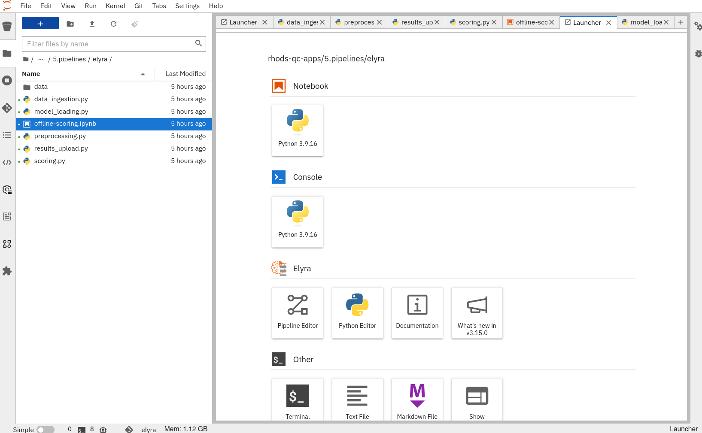 -
Click on the
Pipeline Editortile in the launcher menu. This opens up Elyra’s visual pipeline editor. You will use the visual pipeline editor to drag-and-drop files from the file browser onto the canvas area. These files then define the individual tasks of your pipeline. -
Drag the
data_ingestion.pymodule onto the empty canvas. This will allow the pipeline to ingest the data we want to classify.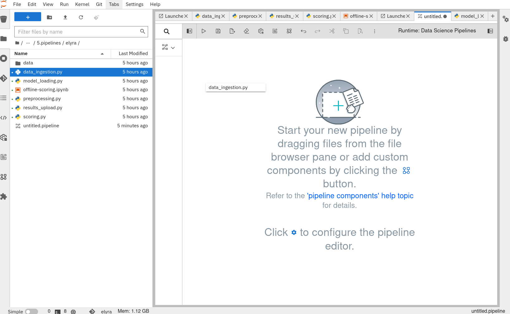 -
Next, drag the
preprocessing.pymodule onto the canvas, right next to thedata_ingestion.pymodule.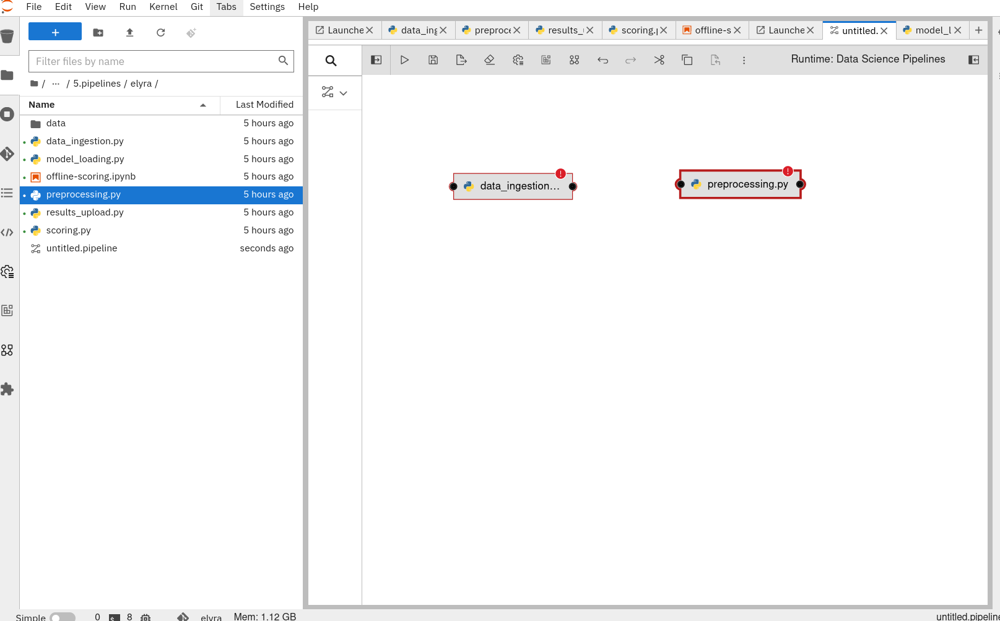 -
Connect the
Output Port(right black dot of the task icon) of thedata_ingestiontask with theInput Port(left black dot of the task icon) of thepreprocessingtask by drawing a line between these ports (click, hold & draw, release).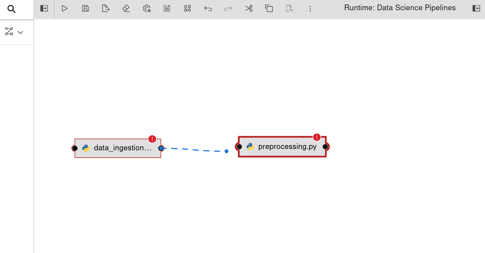You should now see the two nodes connected through a solid line. We have now defined a simple pipeline with two tasks, which are executed sequentially, first data ingestion and then preprocessing.
By visually defining pipeline tasks and connections, we can define graphs spanning many nodes and interconnections. Elyra and Data Science Pipelines support the creation and execution of arbitrary directed acyclic graphs (DAGs), i.e. graphs with a sequential order of nodes and without loops.
-
Now add the
scoring.pyandresults_upload.pymodules to the pipeline and connect them to form a straight 4-step pipeline.
-
In addition to the
preprocessing.pytask, thescoring.pymodule also requiresmodel_loading.pyas an additional input. Sincemodel_loading.pydoes not require any inputs from any other tasks, it can be executed in parallel to the other tasks.Drag the
model_loading.pymodule to the canvas and connect the output of themodel_loading.pyto the input ofscoring.py.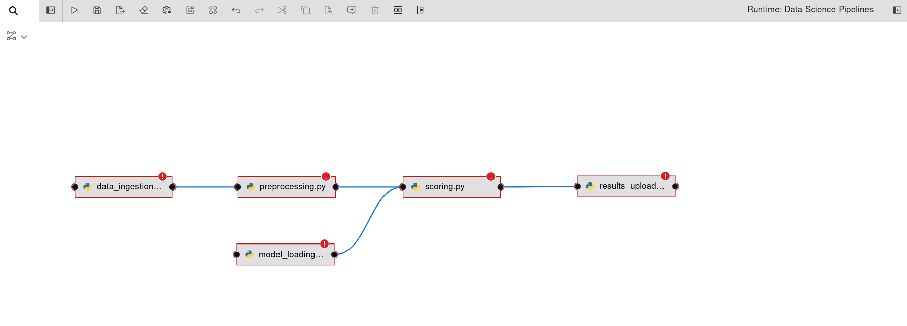
-
We have now created the final graph representation of the offline scoring pipeline using the five available modules. With this we have fully defined the full pipeline code and its order of execution.
Configuring the pipeline
Before we can submit our pipeline, we have to configure the pipeline to specify:
-
Set the dependencies for each step, i.e. the corresponding runtime images
-
Configure how data is passed between the steps
-
Configure the S3 credentials as environment variables during runtime
-
Optionally, configure the available compute resources per step
-
We will configure a new
Runtime Imageby opening thRuntime Imagesmenu from the left toolbar. SelectCreate new runtime imagevia the plus sign in the top portion of the menu. Figure 3. Create a new Runtime image
Figure 3. Create a new Runtime image -
Fill out the required values:
-
Display Name:
fraud detection runtime -
Image Name:
quay.io/mmurakam/runtimes:fraud-detection-v0.2.0
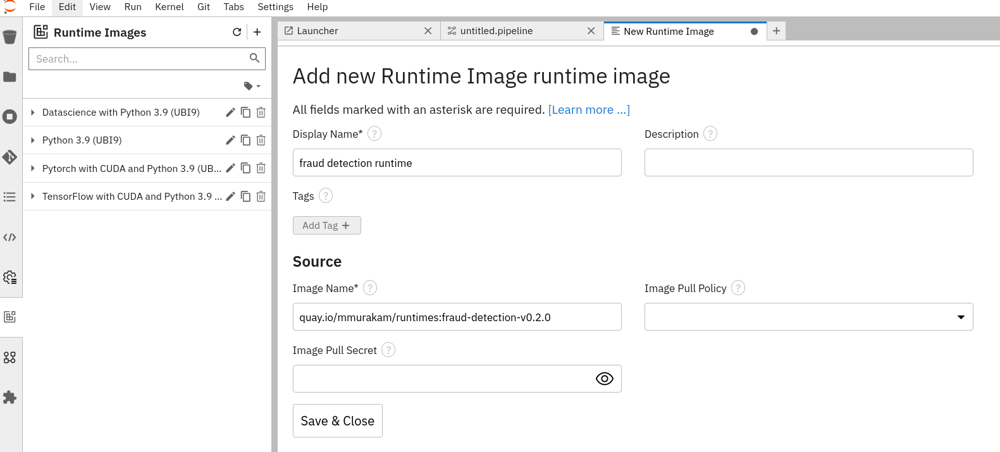 -
-
Click
Save & CloseFor every custom workbench image, we recommend building a corresponding pipeline runtime image to ensure consistency between interactive and pipeline-based code execution. Notebook images can be utilized as a pipeline execution environment, but they contain additional packages needed for the interactive development experience and are often larger than necessary for the pipeline execution.
-
Next we will configure this runtime image to be used by our pipeline. Open the pipeline settings in the Elyra pipeline editor via
Open Panelin the top right corner of the editor.-
Select the
PIPELINE PROPERTIEStab of the settings menu. Configurations in this section apply defaults to all nodes in the pipeline. -
Scroll down to
Generic Node Defaultsand click on the drop down menu ofRuntime Image. Select thefraud detection runtimethat we previously defined.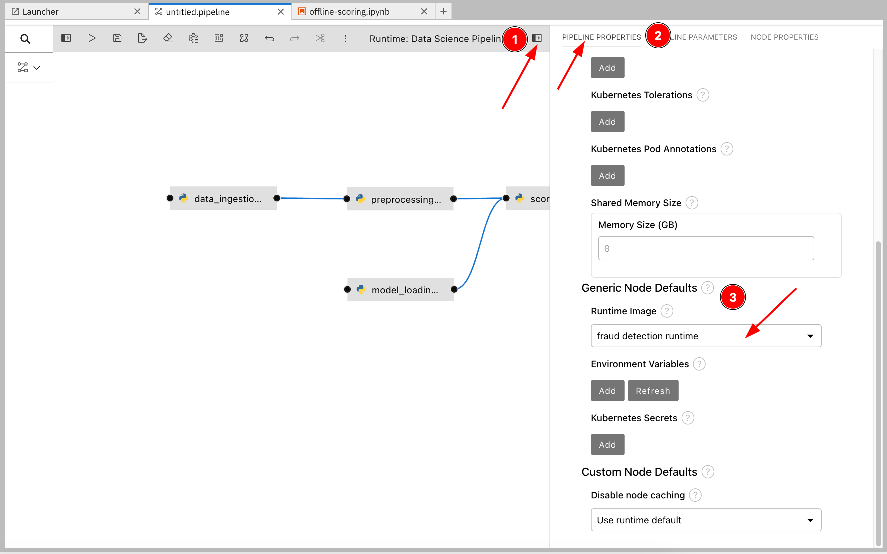Figure 4. Set pipeline wide defaultsDo not select any of the nodes in the canvas when you open the panel. You will see the PIPELINE PROPERTIEStab only when none of the nodes are selected. Click anywhere on the canvas and then open the panel.
-
-
Next we will configure the data connection to the
fraud-detectionbucket as a Kubernetes secret. In thePIPELINE PROPERTIESsection, clickAddbeneath theKubernetes Secretssection and add the following four entries:-
AWS_ACCESS_KEY_ID -
AWS_SECRET_ACCESS_KEY -
AWS_S3_ENDPOINT -
AWS_S3_BUCKET
Each parameter will include the following options:
-
Environment Variable: the parameter name -
Secret Name:aws-connection-fraud-detection(the name of the Kubernetes secret belonging to the data connection) -
Secret Key: the parameter name
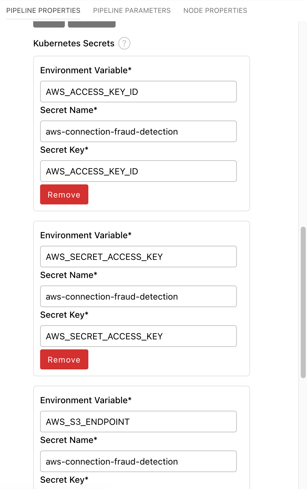A data connection in OpenShift AI is a standard Kubernetes secret that adheres to a specific format. A data connection name is always pre-pended with
aws-connection-. To explore the data connection you can find the secret in theWorkloads→Secretsmenu in the OpenShift Web Console.The AWS default region is another parameter in the data connection, which is used for AWS S3-based connections. In case of self-managed S3 backends such as Minio or OpenShift Data Foundation, this parameter can be safely ignored. Alternatively, when using an AWS bucket, you can skip the endpoint, as it is inferred by the region parameter.
-
-
Next we will configure the data to be passed between the nodes. Click on the
model_loading.pynode. If you’re still in the configuration menu, you should now see theNODE PROPERTIEStab. If not, right-click on the node and selectOpen Properties.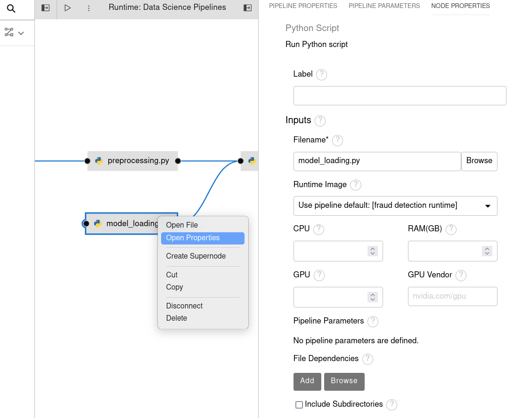 -
Under
Runtime ImageandKubernetes Secrets, you can see that the global pipeline settings are used by default. -
In the
Outputssection, you can declare one or more output files. These output files are created by this pipeline task and are made available to all subsequent tasks. -
Click
Addin theOutputssection and inputmodel.onnx. This ensures that the downloaded model artifact is available to downstream tasks, including thescoring.pytask.
By default, all files within a containerized task are removed after its execution, so declaring files explicitly as output files is one way to ensure that they can be reused in downstream tasks.
Output files are automatically managed by Data Science Pipelines, and stored in the S3 bucket we configured when setting up the DataSciencePipelineApplication.
-
Next we will configure the
offline-scoring-data-volumewe previously setup to allow the steps to store additional data as a mounted volume.In the
NODE PROPERTIESsection of thedata_ingrestion.pynode, scroll to the bottom of theNODE PROPERTIESpanel, and clickAddin theData Volumessection. Enter the following configuration options:-
Mount Path:
/data -
Persistent Volume Claim Name:
offline-scoring-data-volume
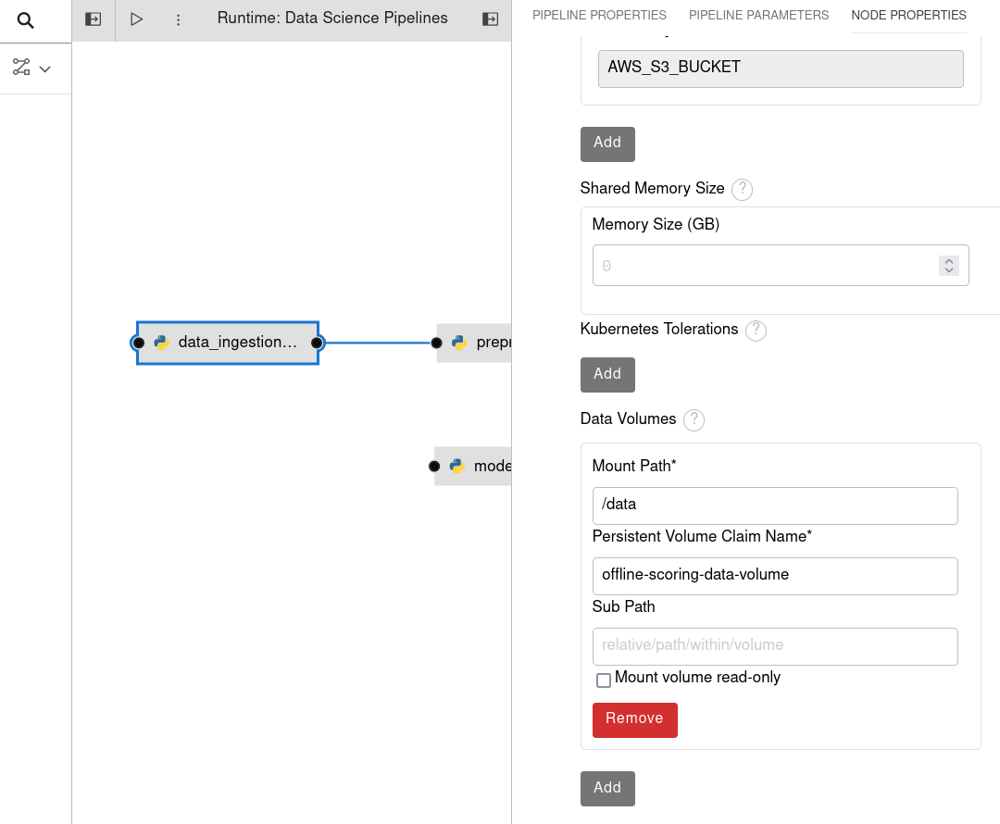 -
-
Repeat the same
Data Volumesconfiguration for the following tasks in the pipeline:-
preprocessing.py -
scoring.py -
results_upload.py
Mount VolumesandOutput Filesboth provide the ability for files to persist between tasks, and each has different strengths and weaknesses.Output Filesare generally easy to configure and don’t require the creation of any additional kubernetes resources. One disadvantage is that Output files can generate a large amount of additional read and writes to S3 which may slow down pipeline execution.Mount Volumescan be helpful when a large amount of files, or a large dataset is required to be stored.Mount Volumesalso have the ability to persist data between runs of a pipeline, which can allow a volume to act as a cache for files between executions.We could have declared the data volume as a global pipeline property for simplicity. However, this would have prevented parallel execution of model loading and data ingestion/preprocessing since data volumes can only be used by a single task by default.
-
-
Rename the pipeline file to
offline-scoring.pipelineand hitSave Pipelinein the top toolbar.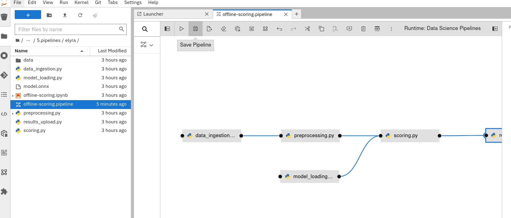
-
Running the pipeline
We have now fully created and configured the pipeline, so let’s now see it in action!
-
In the visual editor, click on the Play icon (
Run Pipeline). Leave the default values and hitOK.Data Science Pipelines should be selected as the default execution environment automatically when starting the pipeline run. OpenShift AI will automatically configure and select the DataSciencePipelinesApplication instance we created previously as the default execution environment provided the DataSciencePipelinesApplication was created before the workbench was started and it is located in the same namespace as the workbench.
If you wish to use DataSciencePipelinesApplication that is located in a different namespace from your workbench you can manually configure an execution environment.
If you configure the pipeline server after you have created a workbench and specified a notebook image within the workbench, you will not be able to execute the pipeline, even after restarting the notebook.
To solve this problem:
-
Stop the running notebook.
-
Edit the workbench to make a small modification. For example, add a new dummy environment variable, or delete an existing unnecessary environment variable. Save your changes.
-
Restart the notebook.
-
In the left sidebar of JupyterLab, click
Runtimes. -
Confirm that the default Data Science Pipelines runtime is selected.
-
-
Elyra is now converting your pipeline definition into a Tekton YAML representation and sending it to the Data Science Pipelines backend. After a few seconds, you should see confirmation that the pipeline has been successfully submitted.
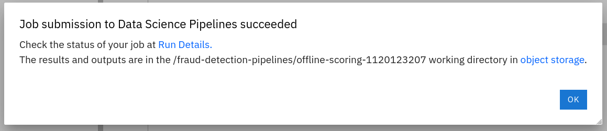 -
To monitor the pipeline’s execution, click on the
Run Detailslink, which takes you to the pipeline run view within the RHOAI dashboard. Here you can track in real-time how each pipeline task is processed and whether it fails or resolves successfully.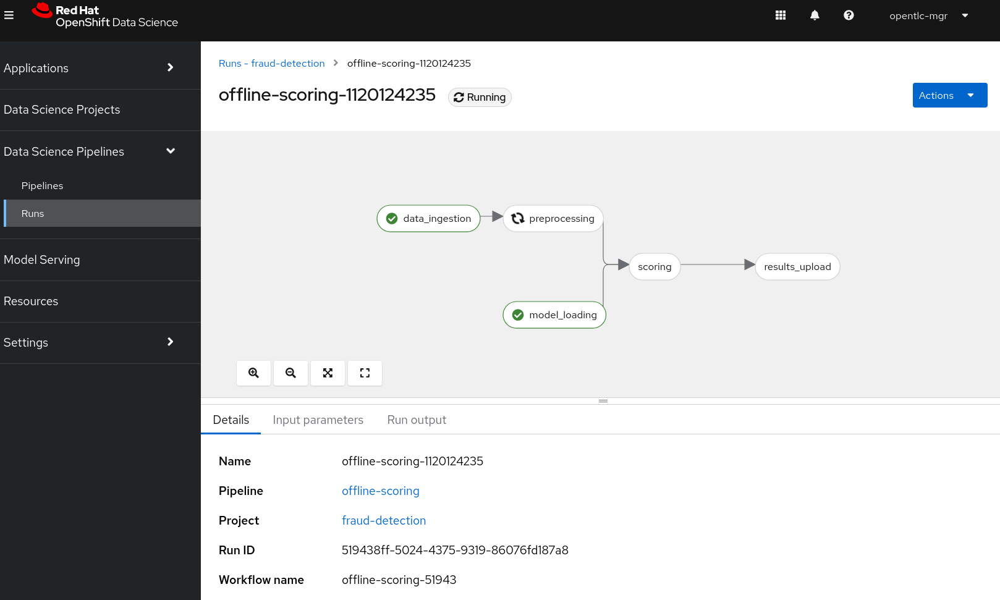 -
To confirm that the pipeline has indeed produced fraud detection scoring results, view the content of the
fraud-detectionbucket. You should now see a new CSV file containing the predicted result of each transaction within the used dataset.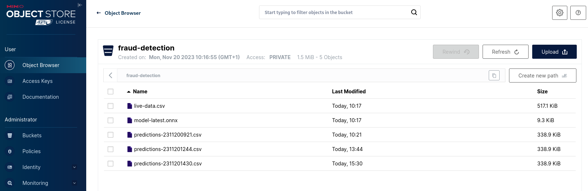 -
Navigate back to the
Runsoverview in the RHOAI dashboard. Click theTriggeredtab to see the history of all ongoing and previous pipeline executions and compare their run durations and status.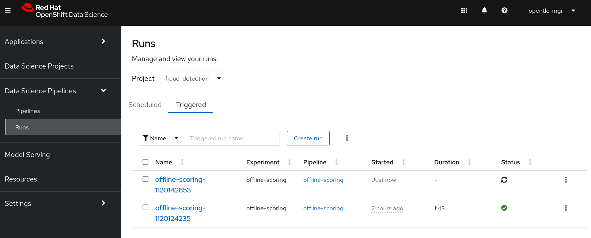 -
In the
Scheduledtab you’re able to schedule runs of the offline scoring pipeline according to a predefined schedule such as daily or according to a Cron statement.
Pipeline versioning is not fully implemented in Data Science Pipelines. If you change an Elyra pipeline that you have already submitted before, the initial version might get executed.
To ensure that your latest changes are executed, you have two options:
-
Delete the pipeline through the dashboard before running the pipeline again.
-
When you run the pipeline, define a new name for the new pipeline version (e.g
my-pipeline-1,my-pipeline-2).
-
Tracking the pipeline artifacts
Let’s finally peek behind the scenes and inspect the S3 bucket that Elyra and Data Science Pipelines use to store the pipeline artifacts.
-
View the contents of the
data-science-pipelinesbucket, which we referenced through thepipelinesdata connection. You can see three types of folders:-
pipelines: A folder used by Data Science Pipelines to store all pipeline definitions in Tekton YAML format. -
artifacts: A folder used by Data Science Pipelines to store the metadata of each pipeline task for each pipeline run. -
One folder for each pipeline run with name
[pipeline-name]-[timestamp]. These folders are managed by Elyra and contain all file dependencies, log files, and output files of each task.
The logs from the Tekton Pipeline submitted from Elyra will show generic task information and logs, including showing the execution of our python files as a subtask. Log details from our code is not recorded in the pipeline logs.
To view logs from the execution of our code, you can find the log files from our tasks in the runs in the Data Science Pipelines bucket.
-
Now that we have seen how to work with Data Science Pipelines through Elyra, let’s take a closer look at the Kubeflow Pipelines SDK.